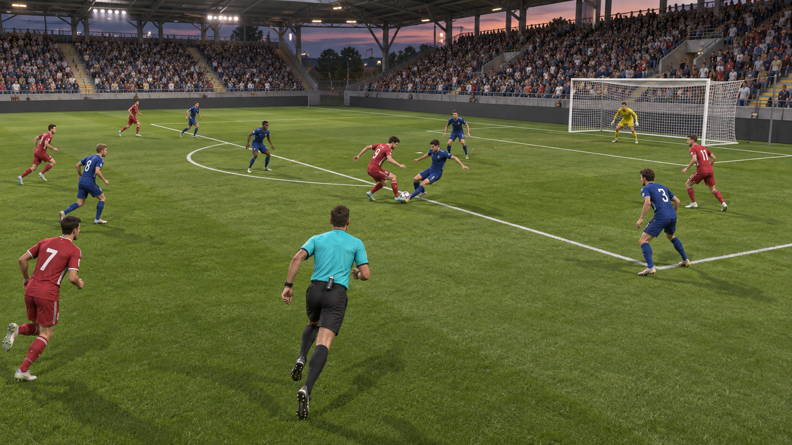

MVP · PRINCIPALINTERPRETATIVA
Desafío en el límite del área
Una recepción orientada, un defensor que llega tarde y una línea que cambia la reanudación.
- Duración
- 4–6 min
- Decisiones
- 3
- Reglas
- 12 · 14 · VAR

PROTOTIPO VISUAL · ESCENA 3D PLANIFICADA
Movete, elegí tu ángulo y decidí con la evidencia que realmente pudiste observar.
SIMULADOR
Cada rol observa la misma línea temporal desde una tarea distinta.
La alineación, la señal y la comunicación son parte del plan. Este concepto no evalúa ni guarda intentos de asistente.
ESCENARIOS CURADOS
Catálogo ilustrativo: un ejemplo de árbitro principal y dos situaciones planificadas. No se cargan datos de red.
Una recepción orientada, un defensor que llega tarde y una línea que cambia la reanudación.
Esta vista ilustra una espera. No hay una solicitud activa ni contenido nuevo en camino.
Es un estado de demostración; no ocurrió un error de red. Podés reintentar la carga ilustrativa o cambiar de rol.
Probá otra búsqueda entre los tres ejemplos de este concepto.
Esta situación todavía no tiene hechos curados, decisiones evaluables ni briefing jugable en el concepto.
El atacante recibe cerca del área. Tu prioridad es mantener una línea de visión limpia entre ambos jugadores y reconocer dónde ocurre el contacto.
Elegí según lo que pudiste observar desde tu posición.
ACADEMY
Probá otra búsqueda entre los siete temas ilustrativos.
No alcanza con ver contacto. Primero describí qué hizo cada jugador, dónde ocurrió y cómo afectó al rival.
El defensor disputa el balón, llega con velocidad controlable y desplaza al atacante. La decisión depende de la forma y consecuencia del contacto, no sólo de su existencia.
Separá hechos observables de interpretación: velocidad, punto de contacto, posibilidad de jugar el balón, intensidad y efecto sobre el rival.
COMUNIDAD · DATOS FICTICIOS
La valoración y los comentarios que siguen pertenecen sólo al primer partido ficticio. Este segundo partido ilustra contenido planificado.
PRÁCTICA ESTRUCTURADA
PERFIL DE APRENDIZAJE
Ruta actual: Árbitro principal · Nivel inicial
Estos ejemplos no están guardados en una cuenta.
Ley 12 · DesafíosDebate demo · Minuto 64VAR · Error claro y obvioEstos ajustes muestran una idea de producto; todavía no se pueden editar ni guardar.
En el 64′ me parece defendible continuar: el defensor juega el balón primero y el contacto posterior no impide el avance.